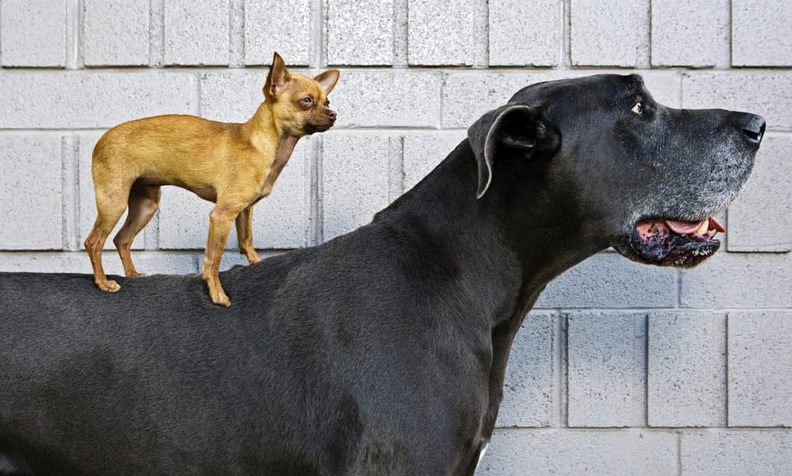
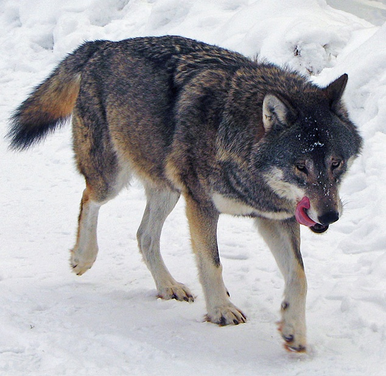
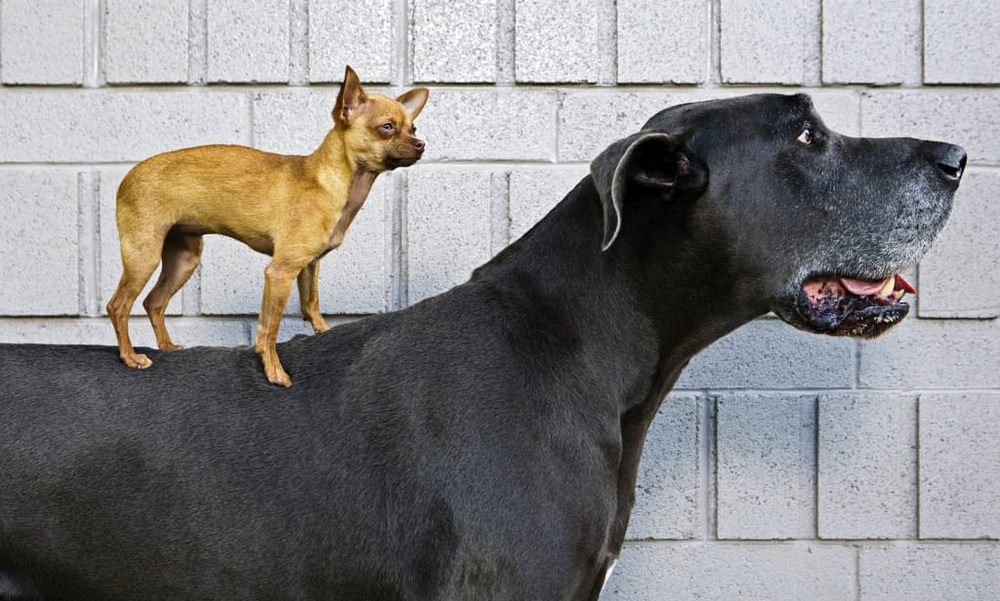
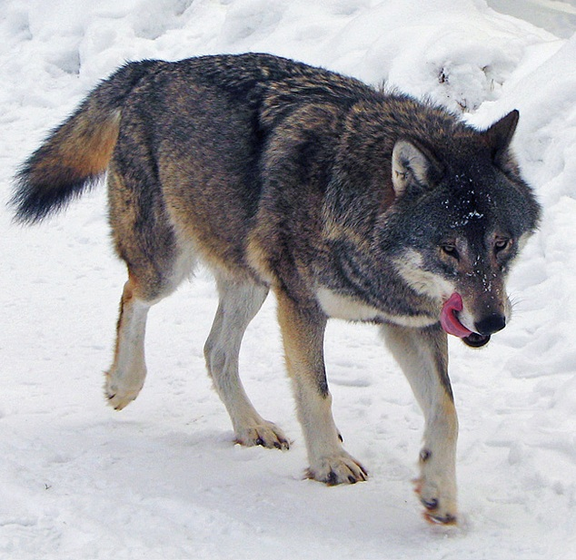

Small dog.

Big dog.
Smiling dog.

Dogs came from wolves, like this one.
This blog is primarily about dogs. However, there are also other pages dedicated to cats (not dogs), bats (winged dogs), and rats (tiny dogs). Also, sheep (fluffy dogs).
Small dog.
Big dog.
Smiling dog.
Dogs came from wolves, like this one.
